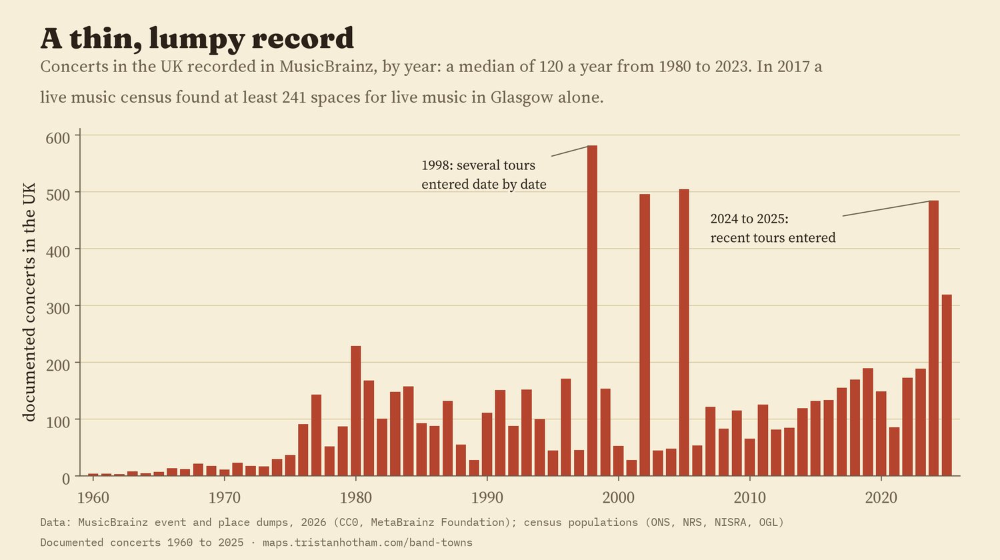
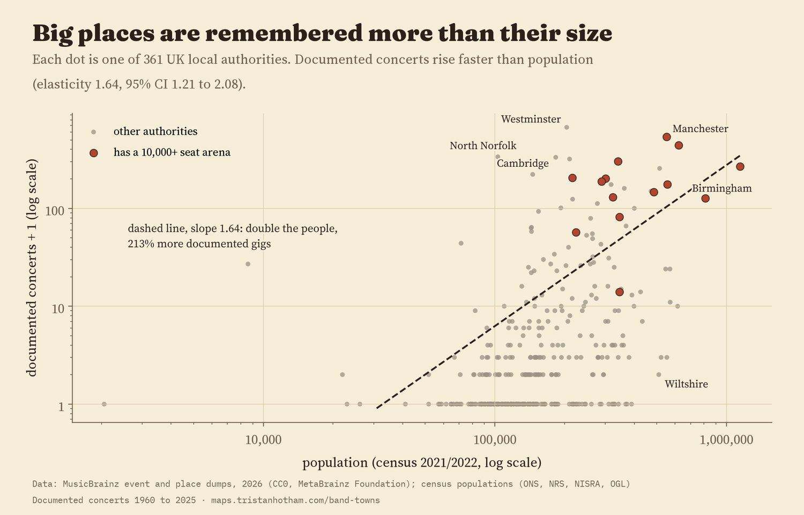
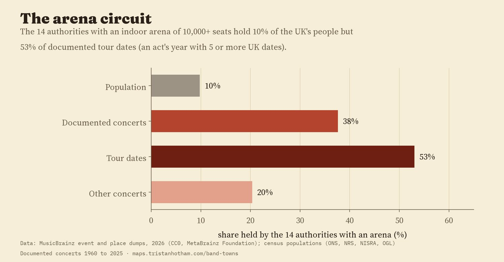
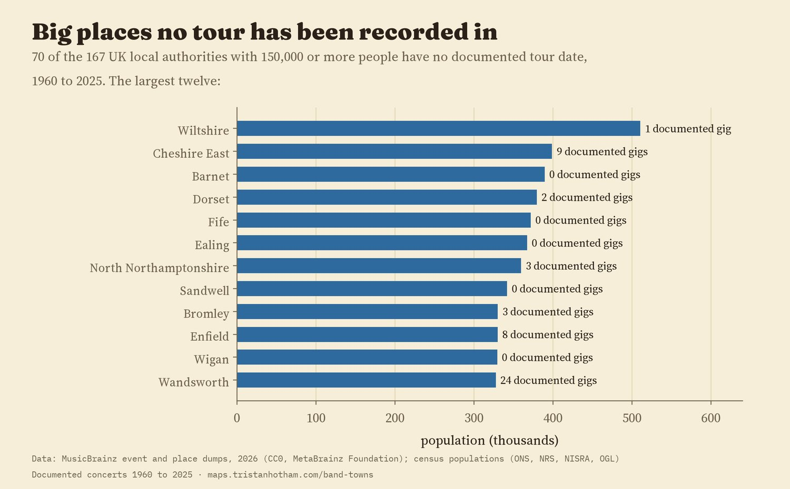
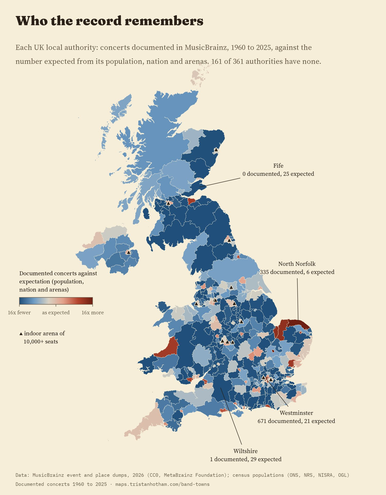
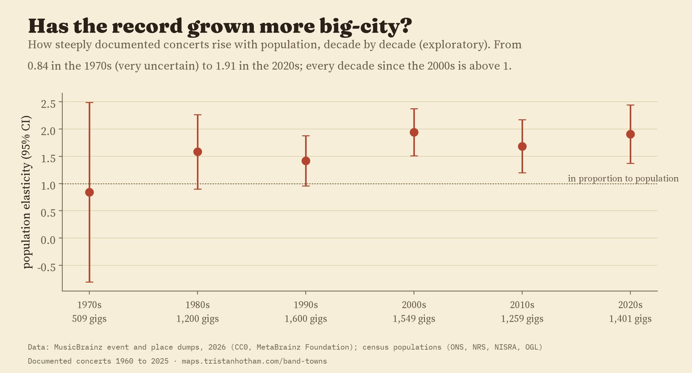

Every UK local authority (the outlined areas), sized by the concerts documented in MusicBrainz, 1960 to 2025, and coloured by whether that is more or fewer than its size predicts. A volunteer record, not a census. Slide through the decades; tap a circle or search.
The UK's 361 local authorities (2023). Circles sit at each area's centre. Counts are concerts someone has entered in MusicBrainz, a small fraction of all gigs.
Somebody, somewhere, has typed in the date, the venue and the band for 11,329 live events in the United Kingdom. They live in MusicBrainz, the open music encyclopaedia that anyone can edit. I put every one of the 7,615 documented concerts from 1960 to 2025 into its local authority and asked a plain question: which towns does this record remember, and which does it skip?
Read this as a map of memory, not of music. MusicBrainz holds a median of 120 UK concerts a year from 1980 to 2023. The 2017 UK Live Music Census found at least 241 spaces for live music in Glasgow alone; MusicBrainz knows 57 Glasgow venues across 66 years. A town with no circle has almost certainly had gigs; nobody has written them into this archive.
The record is small and uneven. It grows from a trickle in the 1960s to a hundred or two a year, with spikes in years when someone entered whole tours date by date (582 concerts in 1998, 485 in 2024, 319 in 2025). It leans on famous acts and on a few venues whose histories fans have typed in: the Royal Albert Hall alone has 429 documented concerts, and the West Runton Pavilion in a village on the north Norfolk coast has 335, every one from 1975 to 1983: someone entered a long run of its gigs. The ten most documented acts account for 12% of all documented concerts.

Documented UK concerts per year in MusicBrainz.
Bigger places have more documented concerts, and more than in proportion: across the 361 council areas, a place with twice the people has about 213% more (elasticity 1.64, 95% interval 1.21 to 2.08). Cities tend to have more of everything per head that depends on crowds and networks, and live music is plausibly one of them; the archive probably amplifies it, because volunteers document the big shows first. 161 areas, home to 21.8 million people, have no documented concert at all.

Documented concerts against population, by council area.
The clearest pattern is the arena circuit. The 14 council areas with an indoor arena of 10,000 or more seats hold 10% of the UK's people, 38% of documented concerts and 53% of documented tour dates (an act's year with five or more UK dates). After allowing for size and nation, an arena area has 3.8 times the documented concerts (95% interval 1.1 to 13.7), and for tour dates the premium is 7.0 times larger again than for other gigs. The premium is sensitive to a few heavily documented acts: cap each act at three concerts per area, or drop the ten most documented acts, and its interval includes no difference at all. Meanwhile 70 of the 167 areas with 150,000 or more people have no documented tour date: Wiltshire, Cheshire East, Barnet and Fife among them.

Shares held by the 14 council areas with a 10,000+ seat arena.

The largest council areas with no documented tour date, 1960 to 2025.
I expected a shadow too: towns close to an arena city should see fewer gigs, because their audiences travel. In the planned model the shadow is not there (the distance coefficient is -0.22, 95% interval -0.68 to 0.24). It appears only once London's boroughs, which are close to two arenas and full of famous venues, are set aside. That was not the plan, so I report it as exploratory, not a finding.
The map colours each area by its documented concerts against the number expected from its population, nation and arenas. The biggest surpluses are venue archives and capital venues: North Norfolk (335 documented, 6 expected), Westminster (671 against 21), Cambridge with its Corn Exchange (221 against 10). The deepest gaps are big areas with no documented concert at all: Ealing, Barnet, Sandwell. The slider shows how the record has shifted from a 1970s Norfolk venue and London theatres to the arena cities.

Documented concerts against expectation, by council area.

How steeply documented concerts rise with population, by decade (exploratory).
Data. The MusicBrainz event and place dumps (one JSON record per line), streamed without unpacking. An event is placed in the UK by its venue's coordinates inside a 2023 local authority boundary; 904 events (8%) whose venue has no coordinates are placed at the largest UK settlement named like the venue's area. The outcome is every event typed Concert, not cancelled, dated 1960 to 2025. Populations are the 2021 census (2022 in Scotland). Arenas are the UK indoor arenas of 10,000+ seats in Wikipedia's list.
Models. A plan written before any council-area count was made: Poisson pseudo-maximum likelihood models of documented concerts on log population, nation, an arena dummy and log distance to the nearest arena, with robust standard errors. Tours are compared with other gigs in a stacked model. Checks: negative binomial, capping each act at three concerts per area, dropping the ten most documented acts, distinct venues and acts, leaving out each nation and London, and 500 placebo arenas placed in areas of similar size (the real arena premium beats the placebo premium in all but 0.4% of 500 draws).
What this cannot say. MusicBrainz holds a small and biased slice of UK concerts. A busy volunteer can put a town on the map, as West Runton shows, and a town with a thriving scene can be blank. The counts say where concerts were documented, not where music happened, and the models describe associations, not causes.